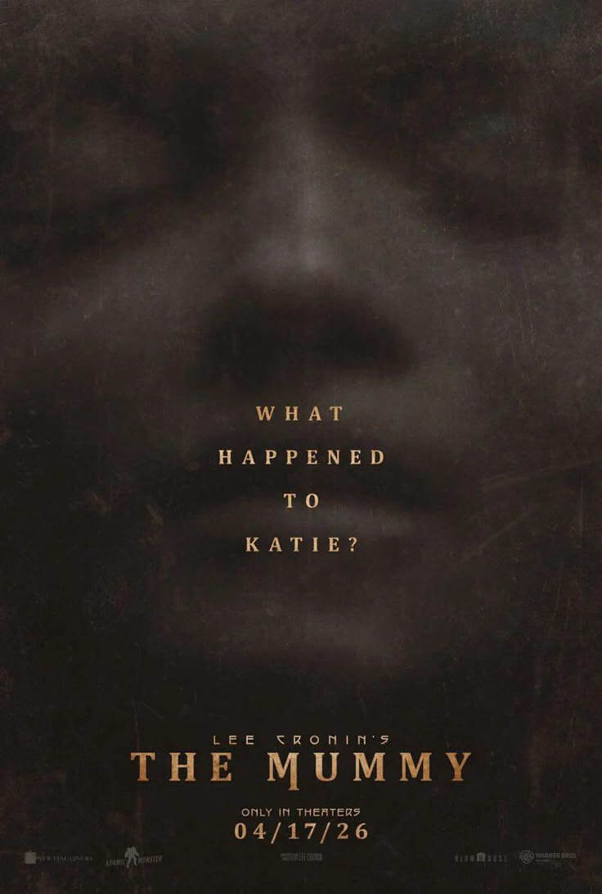
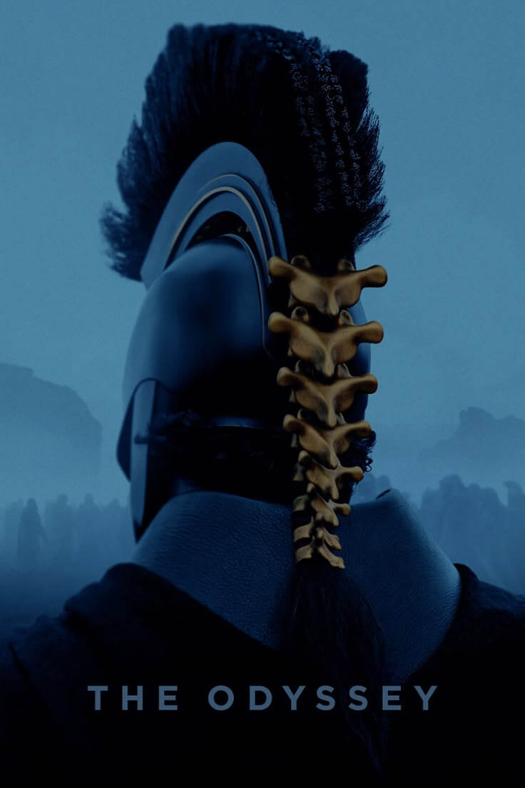

Em Breve
-

Michael: "Protagonizada por Jaafar Jackson, a cinebiografia Michael explora a trajetória e o legado do Rei do Pop, desde o Jackson Five até sua consagração como ícone cultural global."
23 de abril de 2026 | 2h 08min
Direção: Antoine FuquaMichael
-

Maldição Da Múmia: "A filha de um jornalista desaparece num deserto sem deixar rastros, deixando a família dilacerada e em luto. Até que, oito anos mais tarde, a jovem garota reaparece."
16 de abril de 2026 | 2h 14min
Direção: Lee CroninMaldição Da Múmia
-

Homem-Aranha: Um Novo Dia: "Quatro anos após ser esquecido pelo mundo, Peter Parker vive no anonimato em Nova York, dedicando-se integralmente ao seu papel de herói local."
30 de julho de 2026
Direção: Destin Daniel CrettonHomem-Aranha: Um Novo Dia
-
O Diabo Veste Prada 2: "A continuação tão esperada do já clássico O Diabo Veste Prada. A trama acompanha Miranda Prestly num momento de mudanças na moda e na indústria de publicações e revistas."
30 de abril de 2026 | 1h 53min
Direção: David FrankelO Diabo Veste Prada 2
-

A Odisseia: "Sob a direção de Christopher Nolan, o épico de Homero ganha uma adaptação focada na jornada de Odisseu para retornar ao lar após a Guerra de Troia."
16 de julho de 2026
Direção: Christopher NolarA Odisseia
-
O Advogado de Deus: "O advogado Daniel e seu colega Rubinho enfrentam um caso jurídico que acaba revelando conexões profundas com pendências de sua própria vida espiritual passada."
16 de abril de 2026
Direção: Wagner de AssisO Advogado de Deus
-

Dia D: "Ao lado do parceiro de longa data David Koepp, Steven Spielberg dirige seu mais novo longa, uma história de ficção científica e fantasia. Os detalhes da trama permanecem desconhecidos."
11 de junho de 2026
Direção: Steven SpielbergDia D